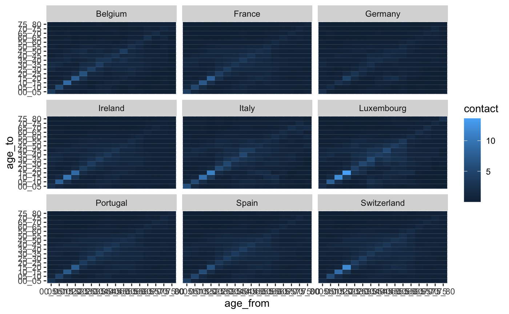
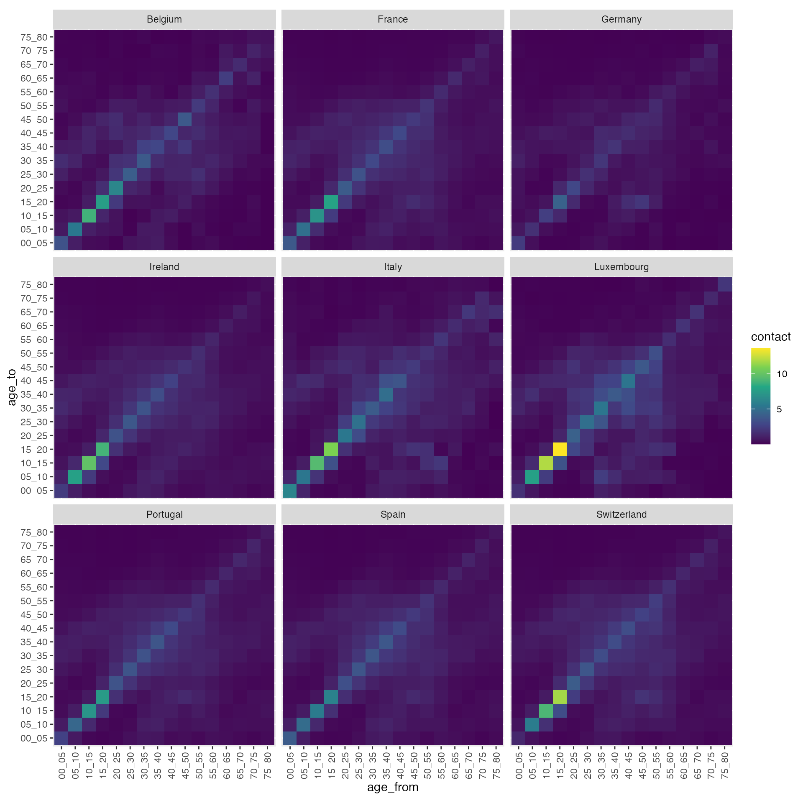
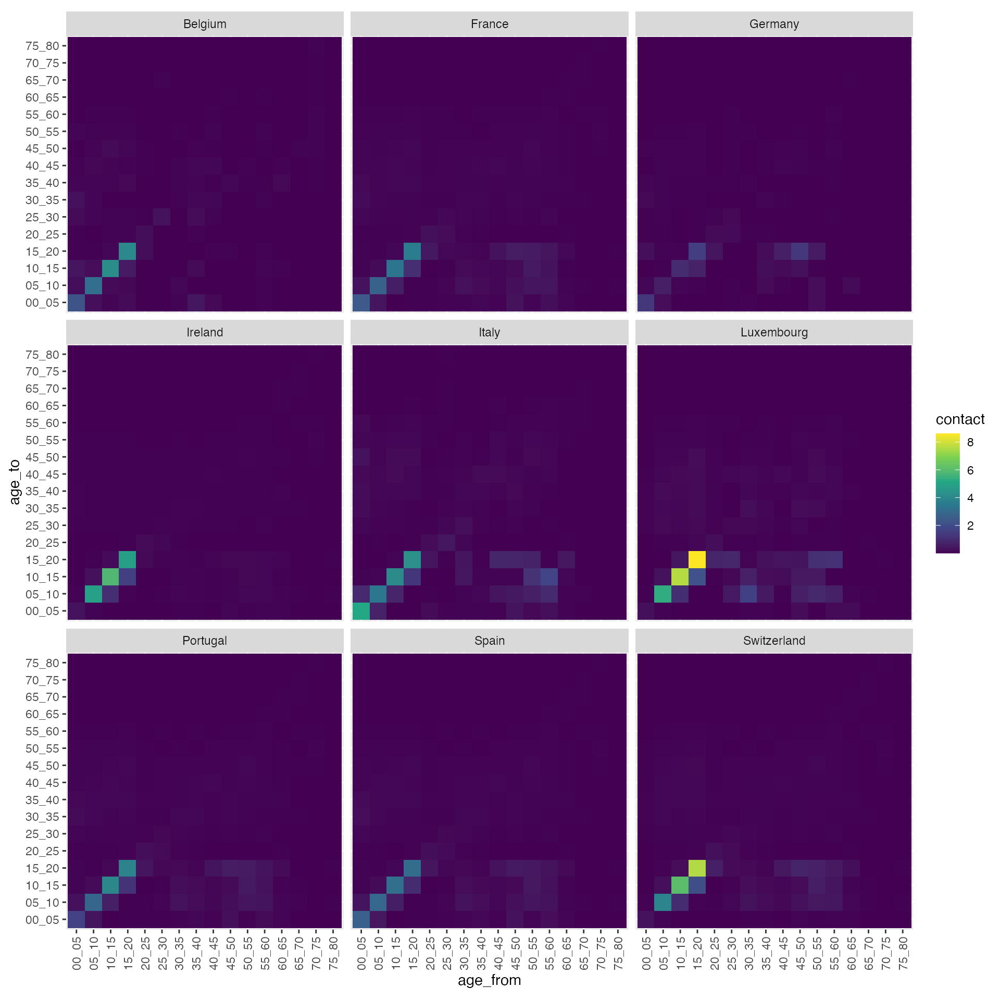

In this vignette, we are going to try to visualise the contact matrices for 9 Western Europe countries. The list of these countries is:
countries <- c("Portugal", "Spain", "Italy", "France", "Ireland", "Belgium", "Luxembourg", "Germany", "Switzerland")
We can get the contact data for all these countries in a single function call with:
contact_data <- contact_df_countries(countries, location = "all")
For the visualisation itself, we use the graphical package ggplot2, which offers a large flexibility in terms of customisation:
library(ggplot2) ggplot(contact_data, aes(x = age_from, y = age_to, fill = contact)) + geom_tile() + facet_wrap(~ country) + coord_equal()

The default colour palette and theme are not very suitable for our data but we can easily edit them with:
ggplot(contact_data, aes(x = age_from, y = age_to, fill = contact)) + geom_tile() + facet_wrap(~ country) + coord_equal() + theme(axis.text.x = element_text(angle = 90, vjust = 0.5, hjust = 1)) + scale_fill_viridis_c()

You can also visualise the contact data at a specific location, e.g. at school:
contact_data <- contact_df_countries(countries, location = "school")
ggplot(contact_data, aes(x = age_from, y = age_to, fill = contact)) + geom_tile() + facet_wrap(~ country) + coord_equal() + theme(axis.text.x = element_text(angle = 90, vjust = 0.5, hjust = 1)) + scale_fill_viridis_c()
